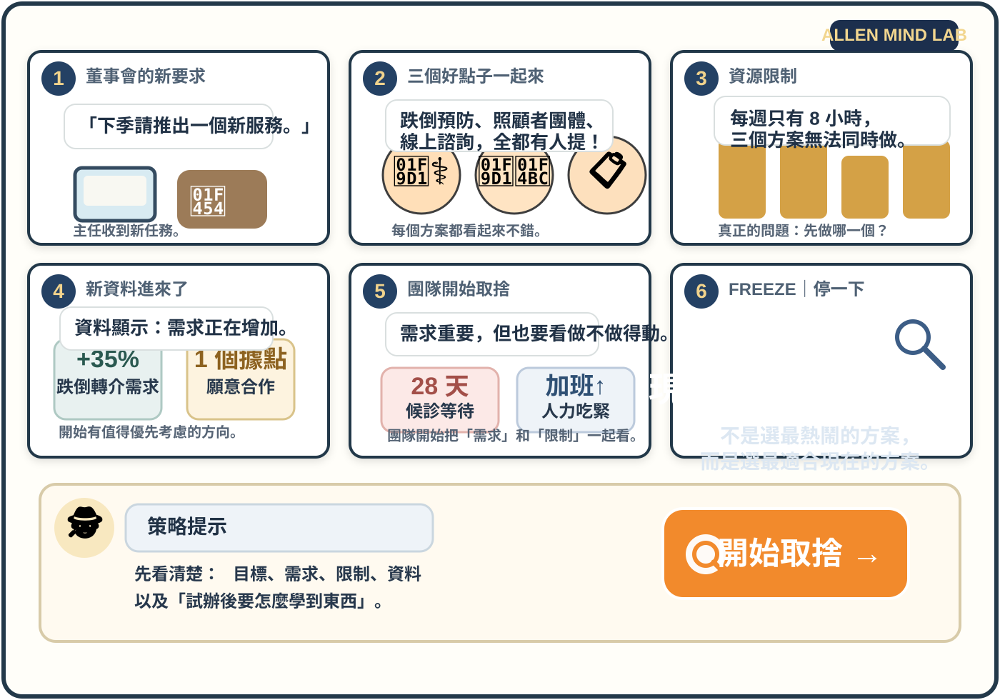
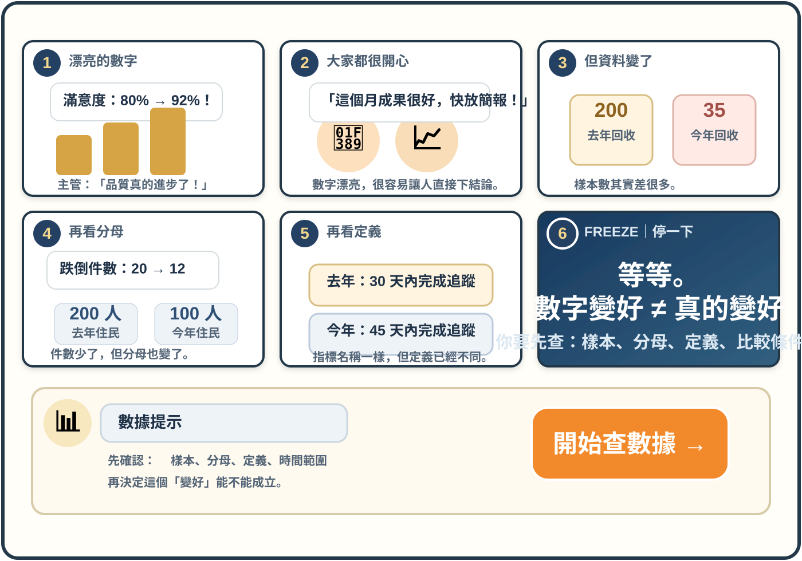

CASE 001 · STRATEGY
三個方案，只能選一個
需求、資源與限制同時出現。你要決定：現在最值得先做什麼？
接受挑戰 →
CASE 002 · KPI & DATA
數字變漂亮了，真的比較好了嗎？
百分比上升、件數下降、KPI 變好。先別鼓掌，看看比較條件是不是也變了。
接受挑戰 →進階挑戰的玩法：每一案約 4–6 分鐘。漫畫只提供線索，不會直接把答案寫在畫面裡；真正要練的是把資訊串起來做判斷。
不是背名詞，而是進入更完整的漫畫情境：先看現場、找線索、整理限制，再做管理決策。

需求、資源與限制同時出現。你要決定：現在最值得先做什麼？
接受挑戰 →
百分比上升、件數下降、KPI 變好。先別鼓掌，看看比較條件是不是也變了。
接受挑戰 →